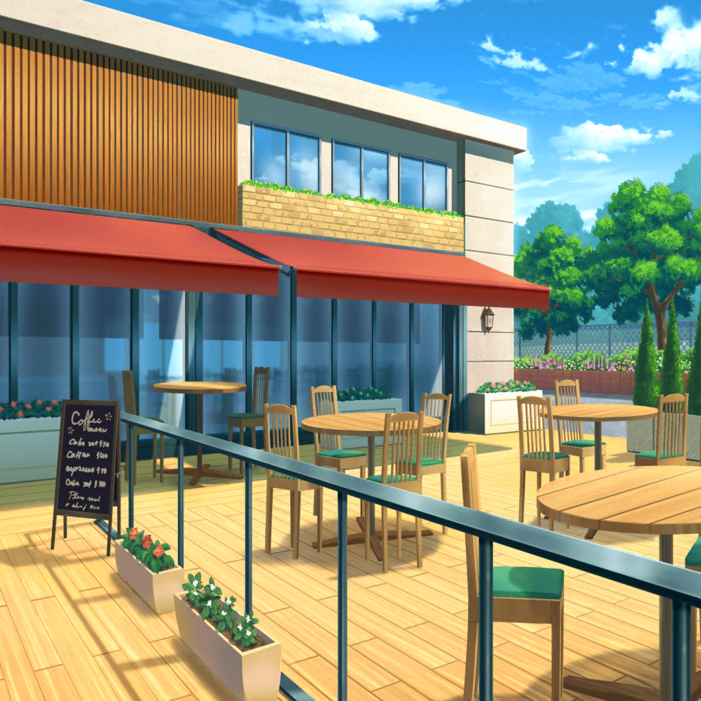

早朝
駅前
つぐみ
おはよう、巴ちゃん、ひまりちゃん！
ずいぶん早いね
巴
お、つぐ！
おはよう
ひまり
おっはよー！
私はさっき来たばっかなんだけど、
巴はずいぶん早かったみたいだよ
つぐみ
それでも十分早いよ。
巴ちゃんはどれくらい前に来たの？
巴
えーと……３０分くらい前、かな
つぐみ
そ、そんなに早かったの！？
ひまり
ふふ。巴〜、今日がすっごく楽しみだったんだよね？
巴
ま、まあアタシのことはいいだろ！
それより、蘭とモカはまだなのか？
ひまり
だって、まだ集合時間の１０分前だよ。
もうちょっと待たないと
つぐみ
あ、噂をしてれば……
おはよう、蘭ちゃん、モカちゃん
蘭
……おはよ
モカ
ふぁぁ～……おはよー
ひまり
２人とも、すっごく眠そうだけど大丈夫？
ちゃんと目、覚めてる？
蘭
ん……一応
モカ
ていうか、集合時間早すぎだよー。
眠い〜。寝そう〜。おやすみ〜……
つぐみ
ここから井ノ島はちょっと遠いからね。
この時間に出ないと、思いっきり遊べなくなっちゃうし
ひまり
電車の中で寝れば大丈夫だって！
それじゃ、みんな揃ったから、早速しゅっぱーつ！
巴
蘭、来てくれてありがとな
蘭
夏、海行けなかったし
巴
はは、そっか
ひまり
ほらほら、蘭ー、巴ー、早く来ないと
置いて行っちゃうよー！

１時間半後
井ノ島
ひまり
井ノ島とうちゃーく！
んーっ！ 海の匂いがするね～！
つぐみ
まずはどこに行こうか？
勢いで、井ノ島行こうってなったけど……
巴ちゃん、どこか行きたい場所ある？
巴
アタシは特に……
ただ、夕日が見たいってだけで
ひまり
ふっふっふ……
どうせそんなことだろうと思って、
オススメの場所、ちゃんとチェックしてきました～♪
モカ
おお～。
なんだかひーちゃん、ヒマってるねー
巴
ひまり、助かるよ！
それじゃあ、とりあえずはひまりの行きたい場所へ行こうか。
アタシは夕日が見られればそれでいいからさ
つぐみ
うん、私もそれでいいよ。
蘭ちゃん達は？
蘭
あたしは、みんなにあわせるよ。
何があるのか、ひまりほど詳しくないし
モカ
あたしは、パンケーキ食べるのと、
食べ歩きができれば満足でーす
ひまり
パンケーキが有名なカフェもチェックしてあるよ！
駅から近いし、そこから行こうよ
蘭
着いてすぐに食べ物……？
ひまり
すっごく人気のあるお店で、いっつも行列なんだって！
だから、混む前に行った方がいいと思うんだ
モカ
それさんせー。
１番最初に行こう
蘭
はあ……ひまりもモカも……
わかったよ、それじゃあそこに行こう

井ノ島 カフェ
つぐみ
よかった！ まだそんなに混んでないみたい。
お店の中の席も、テラス席も空いてるよ
蘭
中にしよう、外は寒そうだし
ひまり
えー？ いやいや、ここはテラス席一択だって！
海がすっごくキレイに見えるってネットに書いてあったもん
ひまり
テラス、ストーブもついてるし、
ブランケットの貸し出しもあるからそんなに寒くないって！
蘭
……ひまり、詳しすぎ……
まあ、ストーブがあるなら大丈夫かな
ひまり
じゃ、そこの角の席にしよ～っ♪
この席が１番眺め良さそうだし！
巴
確かにすごい眺めだな。
じゃあアタシはここに座らせてもらうよ。
ひまりは、海が見える席に座ったらいいんじゃないか？
ひまり
いいの？ ありがとう、巴〜！
それじゃ、バッチリ写真撮っちゃうよ〜♪
ひまり
（……って、意気揚々と言っちゃったけど
思った以上にテラス席寒い……）
ひまり
（で、でも……言い出しっぺの私が寒いなんて
言えるわけもないし……ここは、ガマンだよね。
海の写真も、撮りたいし……）
ひまり
（他のみんなは、大丈夫かな……？）
蘭
……何か、温かいもの頼もうかな
巴
……だな
ひまり
（……やっぱり、寒いよね……）
モカ
あたしはパンケーキ一択〜♪
つぐみ
わ～、このメニュー見て！
さすがパンケーキが有名なカフェだね。
こんなにいっぱい種類があるよ
巴
バナナキャラメルパンケーキ……
抹茶黒糖パンケーキ……
すごいな、このメニュー１冊分、全部パンケーキだぞ
モカ
悩むなー……
ひーちゃんはどれにする？
ひまり
わ、私は、ええええっと……
蘭
ひまり？
体がふるえてるけど……
ひょっとして、寒いんじゃないの？
ひまり
あ、あはは～。
まっさかあ～、そ、そんなことないよ！
わ、私はこのパンケーキにしようかな！